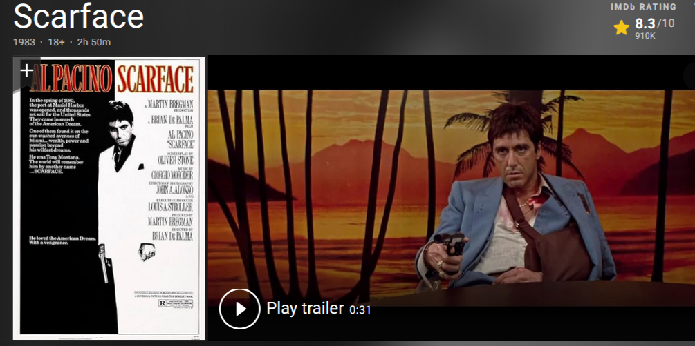
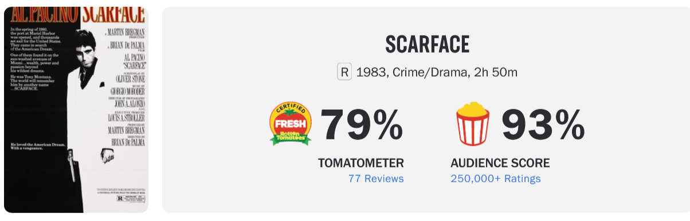

IMDB
The imdb rates this movie a solid 8.3/10.

ROTTEN TOMATOES
Scarface has scored 79% on Tomatometer, while getting an astonishing
93% audience score through
over 250,000+ reviews.

Scarface is a 1983 American crime drama film directed by Brian De Palma, written by Oliver Stone,
and starring Al Pacino. It is a remake of the 1932 film of the same name, in turn based on the
1930 novel by Armitage Trail. It tells the story of Cuban refugee Tony Montana (Pacino), who
arrives penniless in Miami during the Mariel boatlift and becomes a powerful drug lord. The film
co-stars Steven Bauer, Michelle Pfeiffer,Mary Elizabeth Mastrantonio, Míriam Colón and F.
Murray Abraham.
Scarface premiered in New York City on December 1, 1983, and was released on December 9 by
Universal Pictures. The film grossed $45 million at the domestic box office and $66 million
worldwide. Initial critical response was negative due to its excessive violence, profanity, and
graphic drug usage. Some Cuban expatriates in Miami objected to the film's portrayal of
Cubans as criminals and drug traffickers. In the years that followed, some critics
have
reappraised it, considering it one of the greatest gangster films ever made.
The imdb rates this movie a solid 8.3/10.

Scarface has scored 79% on Tomatometer, while getting an astonishing
93% audience score through
over 250,000+ reviews.
